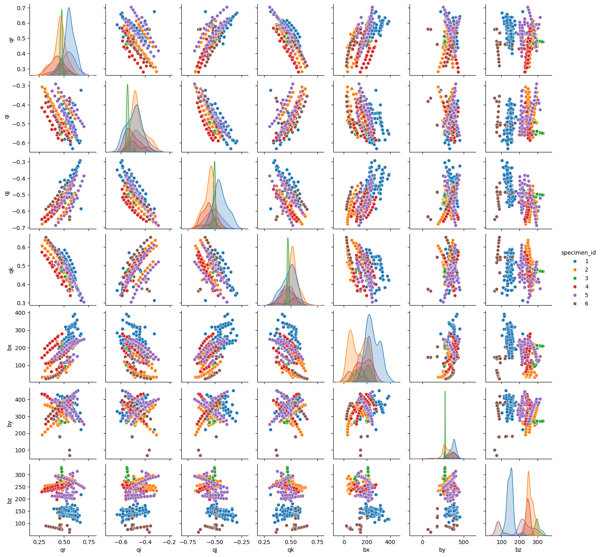
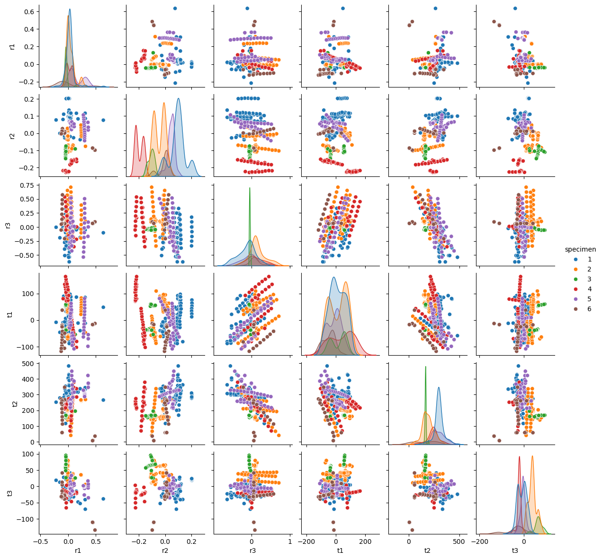
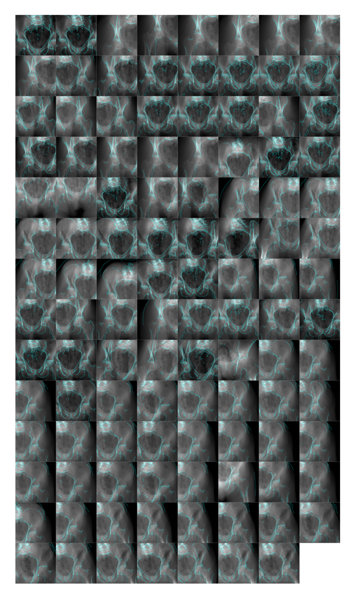
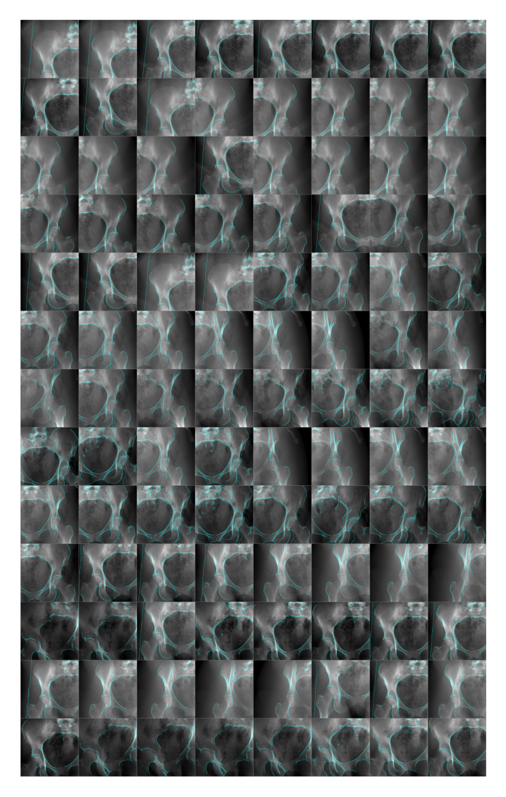
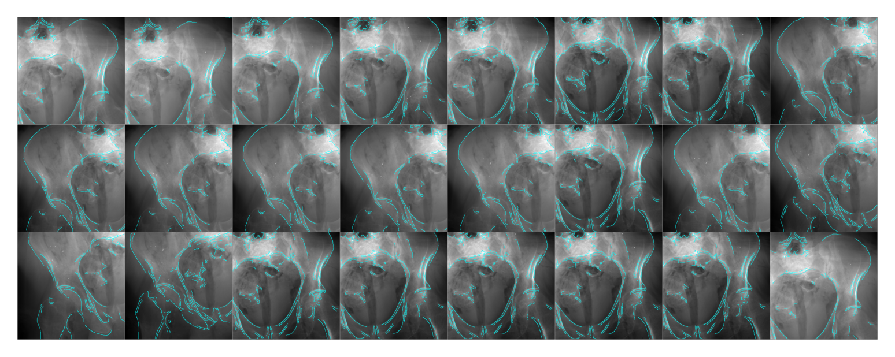
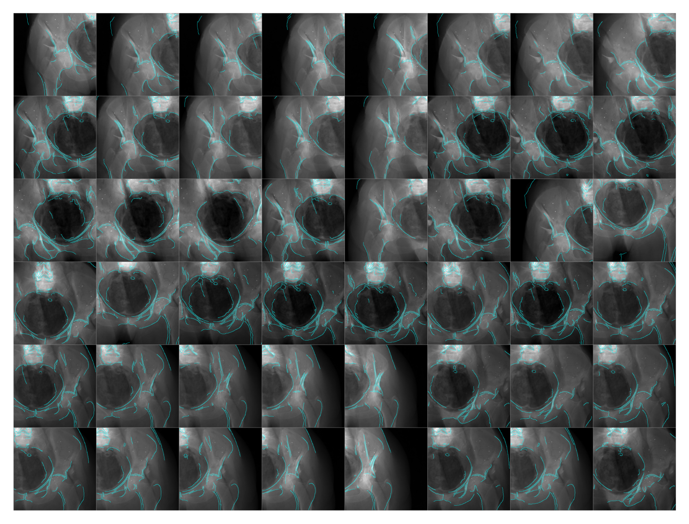
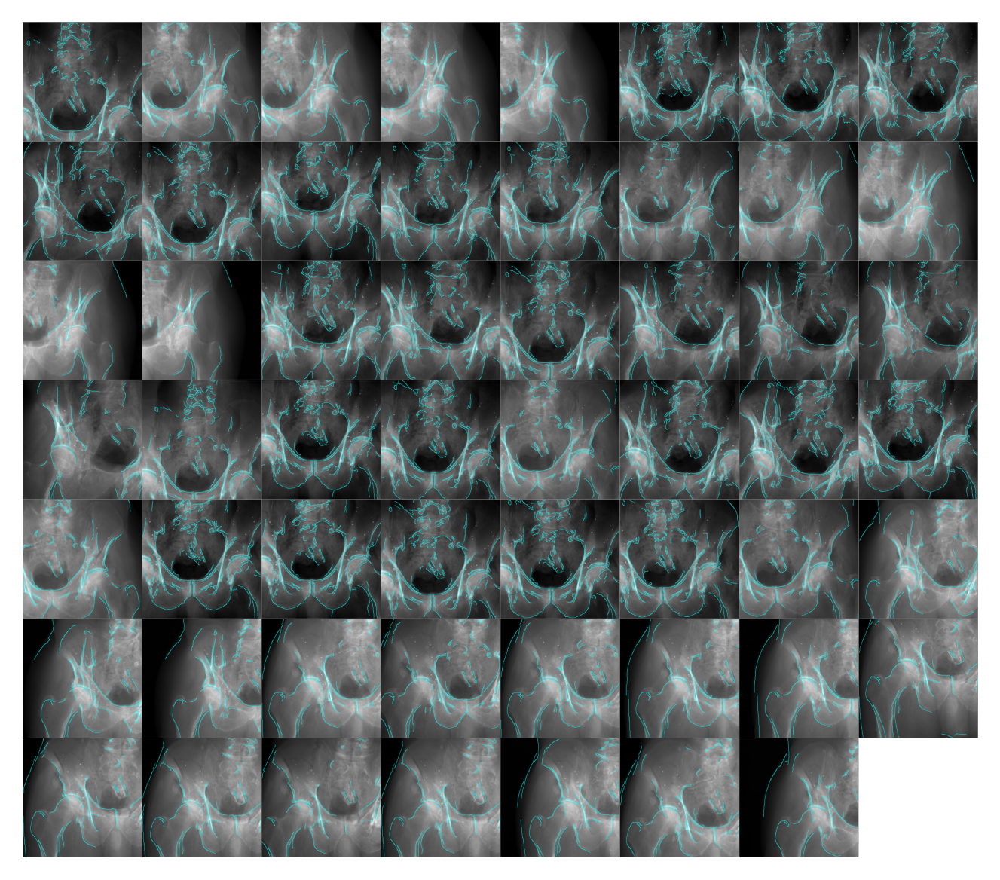
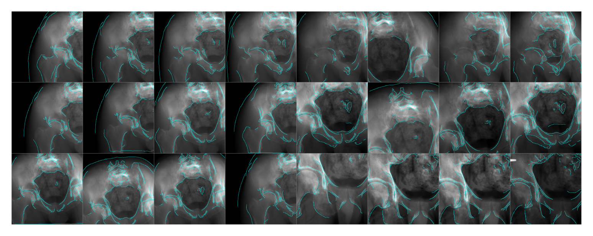

import matplotlib.pyplot as plt
import numpy as np
import torch
from diffdrr.drr import DRR
from pytorch3d.transforms import standardize_quaternion
from tqdm import tqdm
from diffpose.deepfluoro import DeepFluoroDataset, Transforms
from diffpose.visualization import overlay_edgesPose conversion and overlays
Converting DeepFluoro’s poses into parameterizations of SE(3) for DiffDRR
device = torch.device("cuda" if torch.cuda.is_available() else "cpu")class Simulator(torch.nn.Module):
def __init__(self, id_number, bone_attenuation_multiplier=None):
super().__init__()
self.specimen = DeepFluoroDataset(id_number)
self.drr = self.setup_diffdrr(self.specimen, bone_attenuation_multiplier)
self.transforms = Transforms(size=self.drr.detector.height)
def __len__(self):
return len(self.specimen)
def setup_diffdrr(self, specimen, bone_attenuation_multiplier):
subsample = 4
height = (1536 - 100) // subsample
dx = 0.194 * subsample
sdr = specimen.focal_len / 2
return DRR(
specimen.volume,
specimen.spacing,
sdr=sdr,
height=height,
delx=dx,
x0=specimen.x0,
y0=specimen.y0,
reverse_x_axis=True,
bone_attenuation_multiplier=bone_attenuation_multiplier,
).to(device)
def forward(self, idx, sigma):
true_xray, pose = self.specimen[idx]
pred_xray = self.drr(None, None, None, pose=pose.to(device))
true_xray = self.transforms(true_xray)
pred_xray = self.transforms(pred_xray)
return overlay_edges(true_xray, pred_xray, sigma)Visualize camera poses
Parameterizing rotations as quaternions provides the smoothest representations of camera poses, however distributions are very different across subjects.
import pandas as pd
import seaborn as sns
from diffdrr.utils import convertdef read_params(specimen_id):
simulator = Simulator(specimen_id)
parameters = []
for _, pose in tqdm(simulator.specimen, ncols=75):
rotation = convert(pose.get_rotation(), "matrix", "quaternion")
rotation = standardize_quaternion(rotation)
translation = pose.get_translation()
parameters.append(rotation.flatten().tolist() + translation.flatten().tolist())
df = pd.DataFrame(parameters, columns=["qr", "qi", "qj", "qk", "bx", "by", "bz"])
df["specimen_id"] = f"{specimen_id}"
return dfdfs = [read_params(idx) for idx in range(1, 7)]
df = pd.concat(dfs).reset_index(drop=True)
df.head()100%|████████████████████████████████████| 111/111 [00:12<00:00, 9.08it/s]
100%|████████████████████████████████████| 104/104 [00:11<00:00, 9.23it/s]
100%|██████████████████████████████████████| 24/24 [00:02<00:00, 8.68it/s]
100%|██████████████████████████████████████| 48/48 [00:05<00:00, 9.31it/s]
100%|██████████████████████████████████████| 55/55 [00:06<00:00, 9.07it/s]
100%|██████████████████████████████████████| 24/24 [00:02<00:00, 9.65it/s]| qr | qi | qj | qk | bx | by | bz | specimen_id | |
|---|---|---|---|---|---|---|---|---|
| 0 | 0.526532 | -0.472271 | -0.490813 | 0.508750 | 191.273315 | 332.638611 | 165.694885 | 1 |
| 1 | 0.525989 | -0.471070 | -0.491968 | 0.509309 | 190.584625 | 380.110413 | 167.100708 | 1 |
| 2 | 0.636865 | -0.588132 | -0.336718 | 0.367593 | 228.617737 | 285.662231 | 159.831787 | 1 |
| 3 | 0.664899 | -0.590688 | -0.292922 | 0.350989 | 268.551392 | 319.972107 | 103.838623 | 1 |
| 4 | 0.636763 | -0.588241 | -0.336784 | 0.367535 | 225.662567 | 287.129517 | 127.286865 | 1 |
sns.pairplot(df, hue="specimen_id", height=2.0)
plt.show()
Logmap
We can also visualize the camera poses in the tangent plane to SE(3). We specifically visualize offsets from the specimen’s isocenter.
dfs = []
for id_number in range(1, 7):
specimen = DeepFluoroDataset(id_number)
logs = []
for _, pose in tqdm(specimen, ncols=75):
offset = specimen.isocenter_pose.inverse().compose(pose)
logs.append(offset.get_se3_log().squeeze().tolist())
df = pd.DataFrame(logs, columns=["r1", "r2", "r3", "t1", "t2", "t3"])
df["specimen"] = id_number
dfs.append(df)
df = pd.concat(dfs)
df["specimen"] = df["specimen"].astype("category")
df.head()100%|████████████████████████████████████| 111/111 [00:12<00:00, 9.05it/s]
100%|████████████████████████████████████| 104/104 [00:11<00:00, 9.20it/s]
100%|██████████████████████████████████████| 24/24 [00:02<00:00, 9.40it/s]
100%|██████████████████████████████████████| 48/48 [00:05<00:00, 9.32it/s]
100%|██████████████████████████████████████| 55/55 [00:05<00:00, 9.22it/s]
100%|██████████████████████████████████████| 24/24 [00:02<00:00, 9.74it/s]| r1 | r2 | r3 | t1 | t2 | t3 | specimen | |
|---|---|---|---|---|---|---|---|
| 0 | 0.036333 | 0.072215 | 0.000760 | -19.647938 | 240.070465 | 1.458560 | 1 |
| 1 | 0.037587 | 0.072278 | 0.004219 | -19.539360 | 287.097900 | 1.694475 | 1 |
| 2 | 0.018072 | 0.080559 | -0.526908 | -85.570374 | 298.490448 | 2.401929 | 1 |
| 3 | 0.016420 | 0.134538 | -0.622133 | -81.341881 | 362.447906 | -40.157444 | 1 |
| 4 | 0.017985 | 0.080220 | -0.526906 | -87.454056 | 298.952148 | -30.311920 | 1 |
sns.pairplot(df, hue="specimen", height=2.0)
plt.show()
df.describe()| r1 | r2 | r3 | t1 | t2 | t3 | |
|---|---|---|---|---|---|---|
| count | 366.000000 | 366.000000 | 366.000000 | 366.000000 | 366.000000 | 366.000000 |
| mean | 0.042246 | -0.010383 | 0.021493 | 8.183658 | 241.613094 | 6.928242 |
| std | 0.109843 | 0.105303 | 0.236635 | 60.339255 | 79.636910 | 34.754194 |
| min | -0.216699 | -0.228263 | -0.622133 | -117.581871 | 6.971102 | -134.236725 |
| 25% | -0.011940 | -0.086218 | -0.076451 | -41.221780 | 169.136051 | -20.429067 |
| 50% | 0.023854 | -0.001267 | 0.005391 | 7.023252 | 251.910316 | 4.422227 |
| 75% | 0.060591 | 0.072262 | 0.134018 | 58.992722 | 297.788193 | 34.407932 |
| max | 0.634592 | 0.206258 | 0.711423 | 163.980026 | 482.579834 | 95.244934 |
Plot X-rays and DRRs from the computed pose
from torchvision.utils import make_gridSpecimen 1
simulator = Simulator(1, bone_attenuation_multiplier=2.0)
edges = [simulator(idx, sigma=1.0) for idx in tqdm(range(len(simulator)), ncols=75)]
plt.figure(dpi=300)
plt.imshow(make_grid(torch.stack(edges).permute(0, -1, 1, 2)).permute(1, 2, 0))
plt.axis("off")
plt.show()100%|████████████████████████████████████| 111/111 [01:05<00:00, 1.68it/s]
Specimen 2
simulator = Simulator(2, bone_attenuation_multiplier=2.0)
edges = [simulator(idx, sigma=1.0) for idx in tqdm(range(len(simulator)), ncols=75)]
plt.figure(dpi=300)
plt.imshow(make_grid(torch.stack(edges).permute(0, -1, 1, 2)).permute(1, 2, 0))
plt.axis("off")
plt.show()100%|████████████████████████████████████| 104/104 [01:00<00:00, 1.73it/s]
Specimen 3
simulator = Simulator(3, bone_attenuation_multiplier=3.0)
edges = [simulator(idx, sigma=1.0) for idx in tqdm(range(len(simulator)), ncols=75)]
plt.figure(dpi=300)
plt.imshow(make_grid(torch.stack(edges).permute(0, -1, 1, 2)).permute(1, 2, 0))
plt.axis("off")
plt.show()100%|██████████████████████████████████████| 24/24 [00:14<00:00, 1.63it/s]
Specimen 4
simulator = Simulator(4, bone_attenuation_multiplier=2.0)
edges = [simulator(idx, sigma=1.0) for idx in tqdm(range(len(simulator)), ncols=75)]
plt.figure(dpi=300)
plt.imshow(make_grid(torch.stack(edges).permute(0, -1, 1, 2)).permute(1, 2, 0))
plt.axis("off")
plt.show()100%|██████████████████████████████████████| 48/48 [00:29<00:00, 1.64it/s]
Specimen 5
simulator = Simulator(5, bone_attenuation_multiplier=2.0)
edges = [simulator(idx, sigma=1.0) for idx in tqdm(range(len(simulator)), ncols=75)]
plt.figure(dpi=300)
plt.imshow(make_grid(torch.stack(edges).permute(0, -1, 1, 2)).permute(1, 2, 0))
plt.axis("off")
plt.show()100%|██████████████████████████████████████| 55/55 [00:32<00:00, 1.67it/s]
Specimen 6
simulator = Simulator(6, bone_attenuation_multiplier=2.0)
edges = [simulator(idx, sigma=1.0) for idx in tqdm(range(len(simulator)), ncols=75)]
plt.figure(dpi=300)
plt.imshow(make_grid(torch.stack(edges).permute(0, -1, 1, 2)).permute(1, 2, 0))
plt.axis("off")
plt.show()100%|██████████████████████████████████████| 24/24 [00:14<00:00, 1.68it/s]